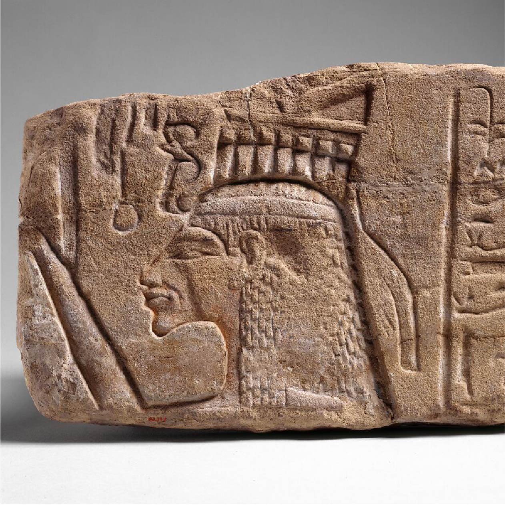
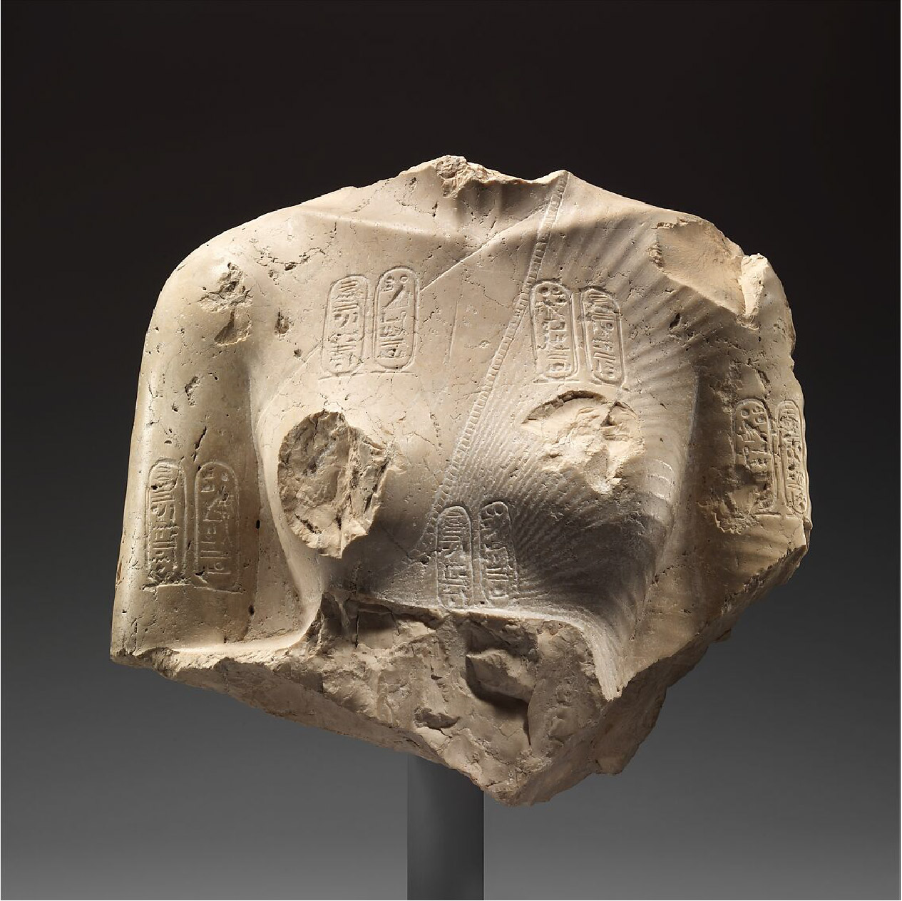
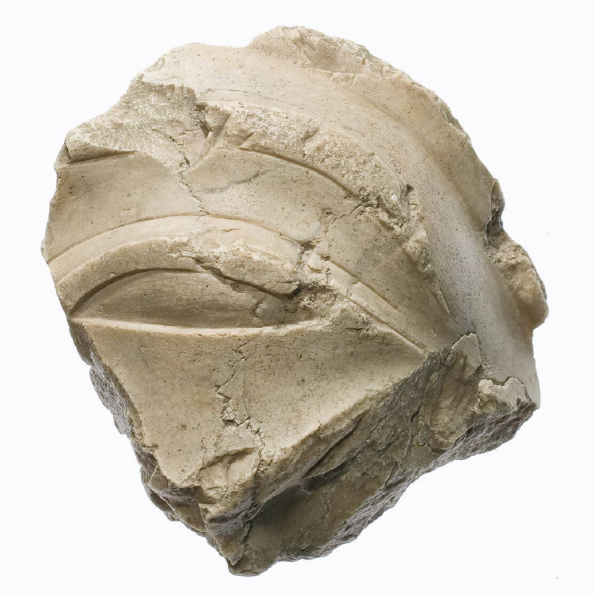
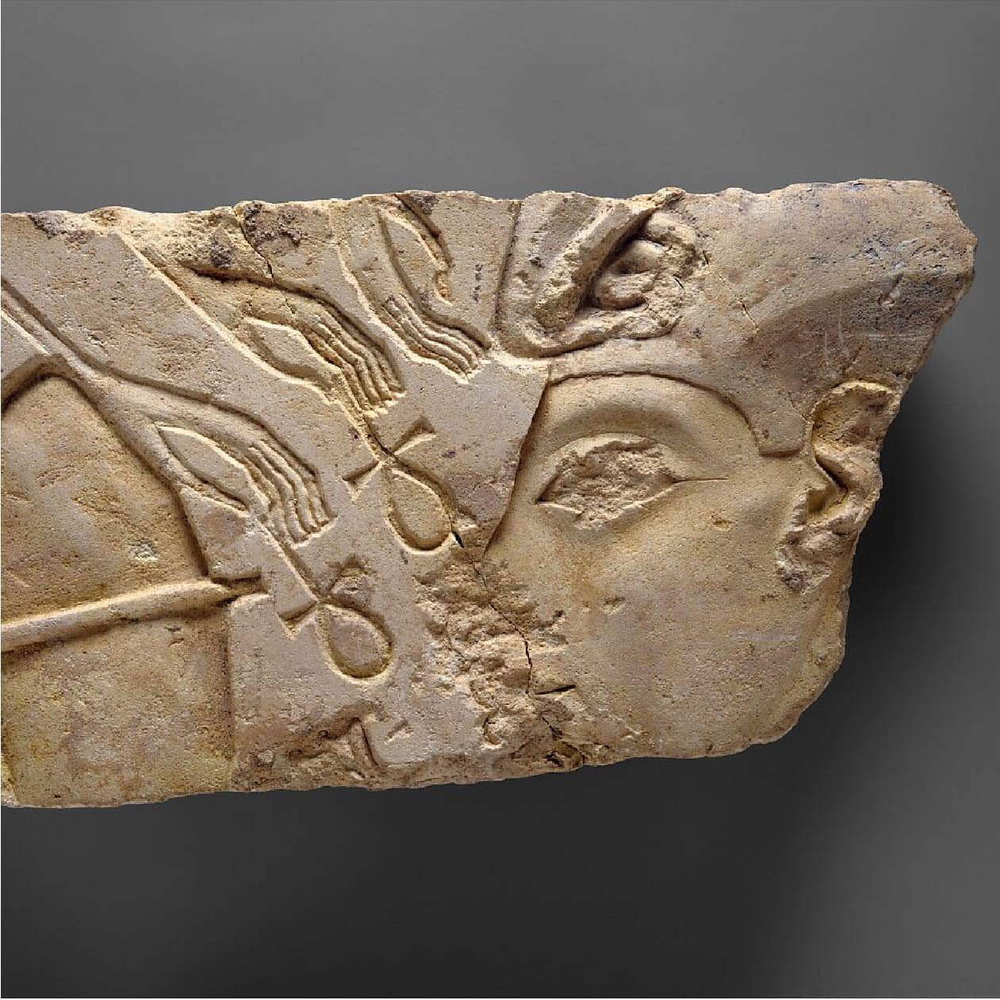
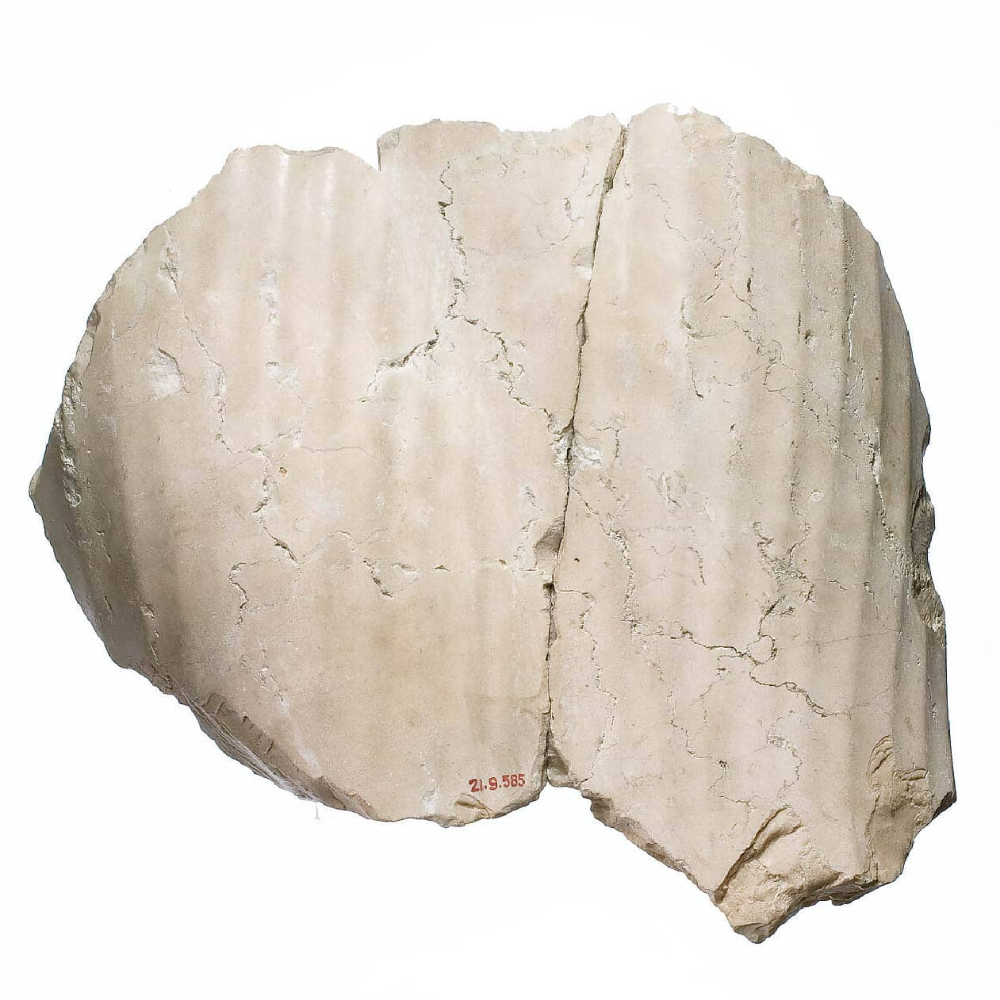
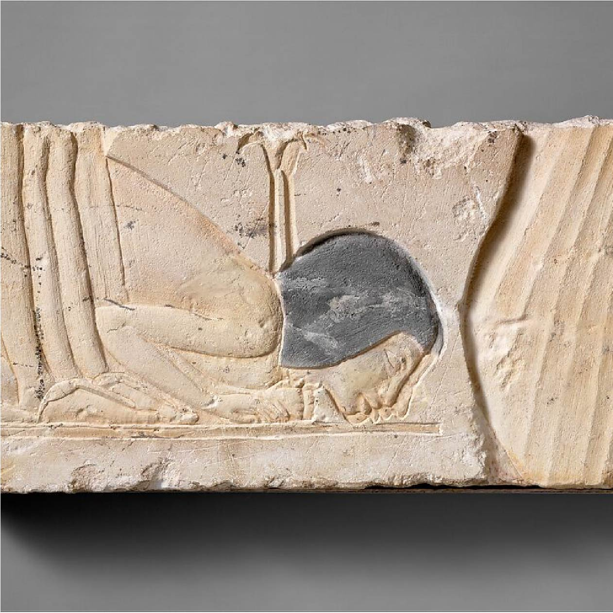
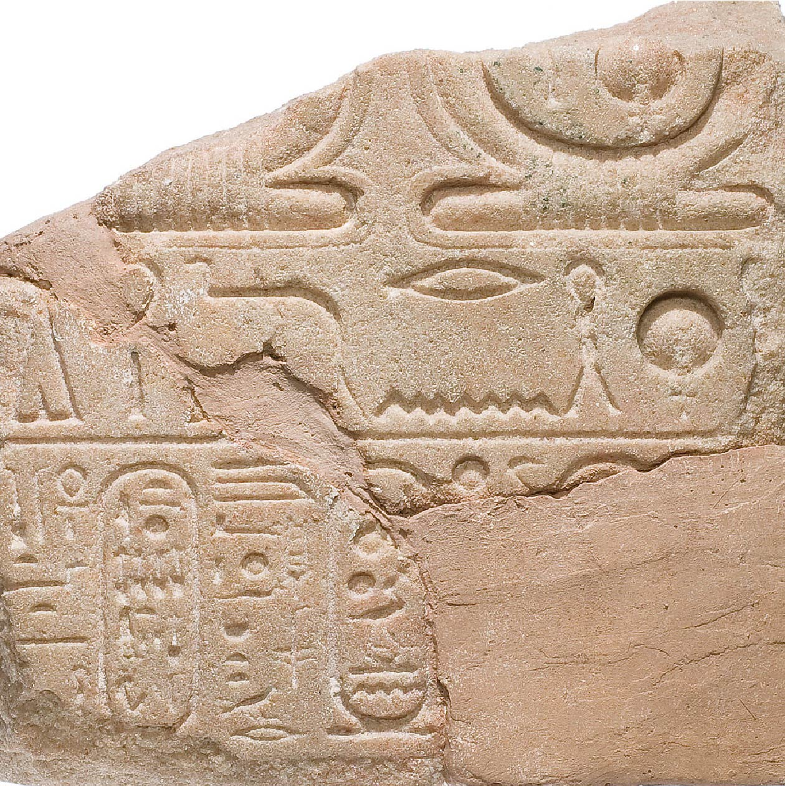

Artifacts Gallery
Explore the many artifacts from the Amarna period
Relief of Queen Nefertiti
 New Kingdom, Amarna Period - ca. 1353-1336 BCE - On View At The Met Fifth Avenue Gallery 122This relief block shows the queen wearing an elaborate wig surmounted by what was originally a towering crown of uraei, sun disk, two cow horns, and two feathers. Her arm is raised in offering to the Aten. The queen's image is depicted, with a drooping chin, thin slanted eyes, and a sharply angled nose and brow similar to that is seen in depictions of her husband in an exaggerated style seen in some earlier of Amarna art (see 66.99.40).
As Marianne Eaton-Krauss, a specialist in Amarna art, has recently pointed out, the traces of the Aten rays around the queen'fs face and arms indicate the disk was almost directly overhead. The queen must have stood alone, without her husband, beneath the rays. She would have been followed by a small figure of her eldest daughter, labeled in the column of hieroglyphs behind her head. The unusual arrangement is known from the pylons of the early Temple of the Benben at Karnak, and from some enigmatic structures known as the Pillars of Nefertiti. The relief may well have originated in one of these structures.
Torso of Nefertiti from a dyad holding a stela in front of the bodies
 New Kingdom, Amarna Period - ca. 1352-1336 BCE - On View At The Met Fifth Avenue Gallery 121This torso of Nefertiti was found in the Sanctuary of the Great Aten Temple or in the dump south of the Sanctuary area of the temple. It was part of a dyad of the king and queen standing together and holding in front of them a wide stela with names of the Aten. The queen's left arm was bent and she held her hand against the side of the stela.
Nefertiti wears a revealing smooth garment leaving one shoulder bare. Over that she has a pleated shawl whose short loop edge can be seen crossing between her breasts to the point where the shawl tied beneath the right breast.
Head of Akhenaten or Nefertiti
 New Kingdom, Amarna Period - ca. 1353-1336 BCE -
On View at The Met Fifth Avenue in Gallery 122
New Kingdom, Amarna Period - ca. 1353-1336 BCE -
On View at The Met Fifth Avenue in Gallery 122
The Head of Akhenaten or Nefertiti, is a gypsum plaster sculpture from the Amarna Period. It exemplifies the artistic style of the time, characterized by androgynous features and refined craftsmanship. Found in the sculptors' workshops at Amarna, its identity as Akhenaten or Nefertiti remains debated.
Finger Ring depicting King Akhenaten and Queen Nefertiti as Shu and Tefnut
 New Kingdom, Amarna Period - ca. 1353-1336 BCE -
On View at The Met Fifth Avenue in Gallery 121
New Kingdom, Amarna Period - ca. 1353-1336 BCE -
On View at The Met Fifth Avenue in Gallery 121
This ring was found at Amarna. The hieroglyphs may be read as an ideogram. The two seated figures are probably Akhenaten (left) and Nefertiti (right) as the deities Shu (air as indicated by the feather he holds) and Tefnut (moisture). They were father and mother of the earth and sky, which are symbolically represented by the earth hieroglyph (below) and by the sun disk flanked by two sacred cobras (above).
Bottle
 New Kingdom, Amarna Period - ca. 1353-1336 BCE -
On View at The Met Fifth Avenue in Gallery 121
New Kingdom, Amarna Period - ca. 1353-1336 BCE -
On View at The Met Fifth Avenue in Gallery 121
This bottle is decorated with the inlaid cartouches of Akhenaten and Nefertiti. The forms of their names indicate that the bottle was made in the later years of the king's reign, when he resided at Amarna. Bottles of this type appear on stands in the banquet and palace storehouse scenes depicted in the tombs at Amarna. These vessels show the skill with which the faience workers of Amarna were able to produce large objects as well as smaller pieces, such as jewelry and inlays.
Righ Eye and Brow from Head of King in the Blue Crown
 New Kingdom, Amarna Period - ca. 1353-1336 BCE - On View at The Met Fifth Avenue in Gallery 121A narrowed banded eye evoking a trance-like gaze is preserved on this fragment of a statuary. The fragment is carved in the indurated limestone that is so characteristic of the Amarna temples. From the fragment it is not possible to say whether Akhenaten or Nefertiti is actually represented, and often even much larger fragments pose problems of identification since the king and queen were closely twinned.
Queen Offering to the Aten
 New Kingdom, Amarna Period - ca. 1345-1335 BCE - On View at The Met Fifth Avenue in Gallery 131This limestone block is from a monumental temple scene representing the king and queen makinig an offering to Aten. The face, usually identified as Akhenaten, actully depicts an Amarna queen, probably Nefertiti, following her husband. The king's shoulder is just visible at the left side of the block. Nefertiti wears the royal "afnet" headcloth with a uraeus cobra at the forehead. Two of Aten's hands hold an ankh to her nose and mouth. The hand at the end of a third ray is turned upward to touch the divine cobra on the queen's forehead. This reversal of the hand position is unusual but not unprecedented, and adds an element of artistic tension to the composition.
The relief has been carved in the restrained style that came into use in about the eights year of Akhenaten's reign, shortly after the capital was moved to Tell el-Amarna (Akhetaten). The delicacy of the modeling, which subtly emphasizes the bones of the lower jaw, cheek, and brow, suggests that the face was carved by a master craftsman.
Goblet Inscribed with the Names of Akhenaten and Queen Nefertiti
 New Kingdom, Amarna Period - ca. 1353-1336 BCE -
On View at The Met Fifth Avenue in Gallery 121
New Kingdom, Amarna Period - ca. 1353-1336 BCE -
On View at The Met Fifth Avenue in Gallery 121
This graceful, translucent drinking cup in the form of a white lotus blossom is treasured both for its beauty and its historical interest. The throne name (Nefer-kheperu-Re, beloved of Re) and personal name of Amenhotep IV are inscribed in the small panel on the side, between two cartouches surrounding the early titulary of the Aten (left) and a cartouche naming the principal queen, Nefertiti (right). Thus, the vessel must have been made before Year 5 of the king's reign, when he changed his name to Akhenaten.
Thighs of Nefertiti
 New Kingdom, Amarna Period - ca. 1353-1336 BCE - On View at The Met Fifth Avenue in Gallery 122This sculptural piece captures the naturalistic depiction of the queen's thighs, reflecting the artistic style of the Amarna Period. The fragment's dimensions are approximately 23.5 cm in height, 28 cm in width, and 9 cm in depth. It was excavated from the Great Temple of the Aten in Amarna during the 1891–92 Petrie/Carter excavations. The artifact was acquired by The Met in 1921 as a gift from Edward S. Harkness. This piece offers insight into the period's emphasis on naturalistic and individualized royal portraits.
Mouth of Akhenaten or Nefertiti
 New Kingdom, Amarna Period - ca. 1353-1336 BCE -
On View at The Met Fifth Avenue in Gallery 122
New Kingdom, Amarna Period - ca. 1353-1336 BCE -
On View at The Met Fifth Avenue in Gallery 122
The Mouth of Akhenaten or Nefertiti is a red quartzite fragment from the New Kingdom's Amarna Period. This sculptural piece captures the lips and chin, showcasing the distinctive artistic style of the era. It was excavated from the sculptors' workshops in Amarna during the 1891–92 Petrie/Carter excavations.
Two Bowing Courtiers behind Nefertiti
 New Kingdom, Amarna Period - ca. 1353-1336 BCE - On View at The Met Fifth Avenue in Gallery 121This block depicts the large hip and buttocks of a female, identifiable by her garment and the curve of her thigh against her stomach. The relative size of the figure indicates the queen is represented. Two men kiss the ground in her presence while clutching the handles of their insignia, followed by a row of three ladies-in-waiting.
Tablet with Cartouches of Aten, Akhenaten and Nefertiti
 New Kingdom, Amarna Period - ca. 1353-1336 BCE - On View at The Met Fifth Avenue in Gallery 122The Tablet with Cartouches of Aten, Akhenaten, and Nefertiti is an ancient Egyptian artifact from the New Kingdom's Amarna Period. Carved from yellow quartzite, this tablet features the cartouches—oval hieroglyphic inscriptions—of the sun deity Aten, Pharaoh Akhenaten, and Queen Nefertiti. These cartouches symbolize the religious reforms of Akhenaten, who established Atenism, a monotheistic worship of the sun disk Aten.
The tablet's dimensions are approximately 13.7 cm in height, 13.5 cm in width, and 5.8 cm in depth. It was excavated from Amarna, the capital city founded by Akhenaten, during the 1891–92 excavations led by archaeologists Flinders Petrie and Howard Carter. The artifact was later acquired by The Met in 1921 as a gift from Edward S. Harkness. This artifact provides insight into the religious and artistic transformations during Akhenaten's reign, highlighting the prominence of Aten and the royal family in the period's iconography.
Go Back To Gallery